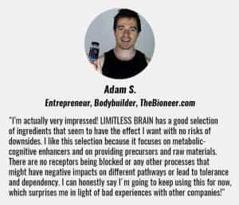

Sponsored Article is ROK's official account that publishes sponsored articles from advertisers. If you are interested hiring a sponsored article for your site, product, or service, visit our advertising page.


The following post was sponsored by Limitless Brain
Some people will say that nootropics are for cheaters. These are the same people who always finish last.
The guys at the top take whatever they can to always be performing at their best, so why shouldn’t you? All nootropics are really doing is making the most of what you already have.
For those who are unaware, nootropics are a class of supplements that work by enhancing the brain. They have powerful effects on the key neurotransmitters and neurons that are responsible for our focus, energy levels, concentration, motivation, memory, learning ability, social skills, & much more.

Whether in the corporate world, the entrepreneurial sphere or virtually anywhere else…
Competition is brutal and everyone is trying to get ahead.
In the modern world, the creative people are the ones who get ahead. If you want to get rich and be successful in life, you need to do whatever it takes to always be performing at your best. With nootropics, you can improve your focus, energy, memory, and cognitive output on demand.
Why have off days when you can always be performing at your best?
No matter what your day-to-day is like, nootropics can make a big difference in your life.
No matter how intelligent you are, if you don’t have energy, you won’t get too far in life. Even on my good days, I will eventually burn out.
One great thing about well-designed nootropic formulas is their combination of cognitive enhancing and energy enhancing ingredients.
By unlocking your brain’s full potential and then giving you the energy to act on that potential, nootropics can truly turn your life around.
I’ll be honest, I was skeptical when I first began experimenting with nootropics. However, I noticed the benefits instantly and realized that before nootropics, I just wasn’t performing at my best.
Don’t get me wrong, I would still have great days.
But sometimes I would wake up, and my energy, my mood, and my focus just weren’t where I wanted them to be.
Nootropics really opened my eyes, and my mind, and allowed my best days to be my everyday.

If you’ve been to college or university or have been around anyone who has, you’ve probably heard the buzz around some of the ADHD medications that currently exist.
While some people do require these medications, many people are taking them illegally to get their edge.
The major difference between prescription medications and natural nootropic formulas is tolerance and addiction. Great nootropic formulas won’t require you to constantly increase your dose nor will they be habit forming.
Instead of abusing illegal substances and slowly destroying your body, be smart and take a natural approach to cognitive enhancement.
Whatever your goals are, nootropics can likely help you. They’ve been well documented over the years to provide the benefits that are required to be successful in high-pressure pursuits.
For the readers of ROK, using a high-quality nootropic formula can help you build your own business and live life on your own terms. A lot of guys have also found them to be good for increasing energy and sociability.

Many newcomers to nootropics end up trying everything they can to see what works best. This isn’t only costly, but ultimately inefficient.
There is also the problem of buying products from a company that isn’t transparent with their formula.
One of the major problems in the supplement industry is when companies create products and call their formula a “blend.” This is basically short for, “We put a small amount of these big name ingredients and a lot of fillers.” Many new nootropic companies are also creating formulas with just 1-3 ingredients.
This leaves minimal room for synergy between the formula and often packs a weak punch. Quit buying sawdust capsules and start buying a product that works.
A much smarter and more cost effective way to get the most out of nootropics is to buy a high-quality formula that is fully transparent with its ingredients and ultimately is a product THAT ACTUALLY WORKS!

We’ve been using nootropics for a long time. Long enough to know what works, what doesn’t, and how to get the best bang for you buck with this incredible class of supplements.
We’ve spent a ton of money trying out different ingredients and combining them until we finally created our own custom formulation. We used it for a while and had a ton of success with it… and then we decided to make it available to the public.
It was a great decision, and we’re happy to tell you about it today.
Our premium formula is called LIMITLESS BRAIN, and it contains the 8 most powerful & synergized nootropic compounds.
It’s made in the United States, in an FDA registered fully compliant facility. It’s also all natural.
It’s safe, it’s cheaper than your daily coffee habit, and most importantly – IT ACTUALLY WORKS.
If you’re worried about being a ‘cheater’ – Who really cares. Give yourself an enormous advantage now with nootropics. The guys at the top already are.
Nootropics are the future of human performance enhancement, and LIMITLESS BRAIN is the gold standard.
Click here to learn more about LIMITLESS BRAIN and try it for yourself today!